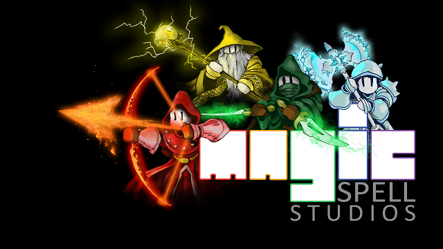
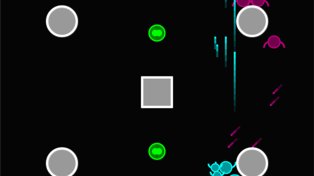
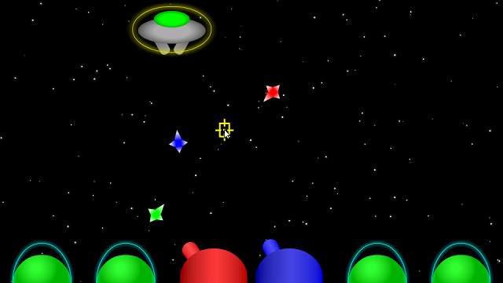

Games
I am currently a Game Design and Development major at the Rochester Institute of Technology, but I have been designing and developing games for much longer than that.
Video Games - Complete or Semi-Complete
-

Color Blind
Help Dr. Chroma repair the Chroma Force. Winner of BrickHack II Best Design. -


Banana Split
A sweet twist of third-person shooting and real-time strategy flavors -


Hack, Slash & Backstab
Where the dungeon is dark, and your friends aren't friendly -


TetrEscape
Room escape meets block-pushing puzzles meets Tetris -


Dr. Magnethands
An RPG for three or more drunk people -


Divide & Conquer
A third-person shooter with player cloning mechanics -

Legitimate Tower Defense
Legitimately defend towers from ridiculous falling objects. -


Inverse Missile Defense
Missile Command from the opposite perspective -
Inverse Cube Runner
Cube Runner from the opposite perspective
Video Game Maps


Analog Games

-
Cosby Brawl
Card game
A card game in which clones of Bill Cosby must suit up in their sweaters and hats, power up with hot dogs and Jello pudding, and fire off their zip-zop-boop attacks in a battle to identify the real Bill Cosby.
Cards, player sheets, and full rules will be uploaded at a later date.
-
Happy Hours
Board game
Some drunk frat boys have gotten their hands on a time machine. Each one wants to reach achieve a different totally awesome and sensible goal a different time period. They fight over control of the time machine while still keeping their glasses full and their blood alcohol content high.
Cards, board template, and rules will be uploaded at a later date.
-
Hexagons
Card game
A single-player card game in which the player attempts to uncover and claim as many cards as possible around the sides of two hexagons. The full rules can be found on this Google Doc.
-
Twilight Princess Monopoly
Board game
The game of Monopoly given a meticulous visual redesign based on The Legend Of Zelda: Twilight Princess. All character tokens, properties, and cards have been rewritten with locations and events from Twilight Princess.
Board and cards will be uploaded at a later date.
Video Games - Designed, but Not Built
-
The Legend Of Zelda: Maestro Of Color
The Legend Of Zelda: Maestro Of Color is a 3D Zelda game set in the Wind Waker timeline around a hundred years after the events of WW. The land of Hyrule somewhat resembles its layout in Ocarina Of Time, but certain parts changed as a result of the great flood. In MOC, Link discovers a dark force is draining the color from Hyrule and sets off on a quest to destroy the evil character behind it.
MOC was originally designed with the Nintendo DS in mind, but the 3DS's improved graphics capabilities make it a better target device. It primarily uses the touch sceren to enhance the standard 3D Zelda controls rather than replacing them, as Phantom Hourglass and Spirit Tracks did.
My work on MOC began around 2007, so PH and ST did not influence the initial game (nor did Skyward Sword or the 3DS port of OOT). Most of the influence came from OOT, MM, WW, TP, and the original TLOZ.
-
Double Smash Bros.
Double Smash Bros. was an attempt to combine the two-player team idea from Mario Kart: Double Dash!! to the Super Smash Bros. series. It was created with a next-generation Nintendo DS in mind (it was designed before the 3DS existed).
In addition to the fighting pairs, DSB introduced a variety of new items, characters, and a new game mode that used SSB trophies in a game that I have been told resembles the Fire Emblem games (I am not familiar enough with the Fire Emblem series to say for sure).
-
Super Mario Sunshine 2
Super Mario Sunshine 2 was originally designed by my friend Jamie Fox-Canning to be a sequel to Super Mario Sunshine. When he dropped the project, he agreed to let me take over working on it. Among other things, I created a lot of concept graphics, a couple new levels, refined the new nozzle designs, and redesigned the controls for the Wii (his original concept was designed for the GameCube).
SMS2 begins with Shadow Mario hitching a ride with Mario and co. back to the Mushroom Kingdom along with some stolen shine sprites. He proceeds to skatter the shines across the Mushroom Kingdom and surrounding areas and start causing trouble in Mushroom City.
Gameplay is similar to SMS1, but with a few additions. Mushroom City serves as the central hub from which Mario can access other levels. Most levels are completed with a combination of platforming and using FLUDD. Some moves from Super Mario 64 that were removed in SMS1 are back now, such as crouching, backflipping (without FLUDD), and long jumping (without sliding).
FLUDD also has some new abilities in SMS2, which the player can unlock once he or she discovers Professor E. Gadd's lab in Mushroom City. New nozzles, such as the Pressure Nozzle, offer new ways of traveling, unlocking secrets, and defeating enemies.
-
Gadd Party
Gadd Party is a game designed for a hypothetical DS successor (it was designed before the 3DS existed) featuring Mario, Luigi, Bowser Jr., Petey Piranha, and Professor E. Gadd. An unknown enemy has attacked Professor Gadd's main lab, so he has recruited his inventions (and their current owners) to assist him (Petey was causing trouble with Bowser Jr. and happened to get caught up in the mix). The player must use all four characters' and their Gaddgets' abilities to complete a variety of challenges, restore power to Gadd's main lab, and take down the villain.
Gameplay is similar to most 3D Mario games at a basic level with some elements added from Super Mario Sunshine, Luigi's Mansion, and some third-person shooters. Gadd's main lab serves as the central hub where the player can switch characters, save his or her progress, and unlock new levels. Most levels (within the context of the story) are other Gadd labs or other areas Gadd has links to (including virtual realities of Gadd's creation).
Gadd Party, to some extent, builds on the charater-switching mechanic in Super Mario 64 DS, but goes much further with it by giving the playable characters and their Gaddgets much more varied abilities and, in some cases, opportunities to work together. In addition, the story actually acknowledges the distrust that would exist and interactions that would likely occur between the characters given their histories with each other (whereas Mario, Luigi, and Wario barely acknowledged each other in SM64DS).